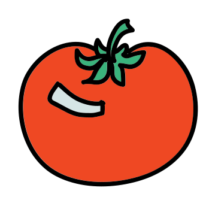

Achievements
- Bachelor's of Ketchup Science
- Master's of Bolognese Science
- PhD of Pomodoro Science
- Winner of “The most mellow berry”
- 5 days as general of vegetable army
Completed quests
- Tomato soup with oregano and ciabatta
- Caesar salad with chicken and parmesan
- Tomato juice with salt
- Pizza Margarita
- Boris’s bruschetta with tomatoes
#!/usr/bin/python
# This one colors the background as well.
# Simple button demo.
from Tkinter import *
# A better way is to create our fancy button by extending the Button class.
class ColorRotButton(Button):
# Brighten a color by hex 101010 and return the modified color.
def brighten(self,c):
ret = '#'
for s in [ 1, 3, 5]:
ret = ret + '%02x' % (min(int(c[s:s+2],16) + 0x10, 0xff),)
return ret
# List of button colors
bcolors = [ '#AA4422', '#33DD11', '#4433EE', '#AA22EE' ]
# Change the label text. Changes the color of the button in rotation.
def changebut(self):
color = self.bcolors.pop();
self.bcolors = [ color ] + self.bcolors
self.configure(background=color,
activebackground=self.brighten(color))
def __init__(self, root):
Button.__init__(self, root, text="Push Me", command=self.changebut)
self.changebut()
# Create the GUI.
root = Tk()
fr = Frame(root, background='#FF3311')
fr.pack()
lab = Label(fr, text="Press Below", background='#FF3311', relief='ridge')
lab.grid(row=0, column=0)
but = ColorRotButton(fr)
but.grid(row=1, column=0)
root.mainloop()

Tip of the day
Crime is common. Logic is rare.
— Arthur Conan Doyle